Licenciatura en Diseño y Comunicación Visual
Universidad Nacional de Lanús (UNLa) | Ingreso: 2022 - Actualidad


Soy estudiante avanzada de la Licenciatura en Diseño y Comunicación Visual en la Universidad Nacional de Lanús. Mi interés se centra especialmente en la tipografía, el diseño editorial y la comunicación visual. Actualmente soy ayudante de cátedra en Espacio Tipográfico II, este espacio me permite seguir aprendiendo y poder compartir con otros alumnos mis conocimientos. Soy una persona muy detallista, con muchas ganas de aprender cosas nuevas y seguir explorando distintas áreas del diseño gráfico y visual.
Universidad Nacional de Lanús (UNLa) | Ingreso: 2022 - Actualidad
Universidad Nacional de Lanús | 2025 - Actualidad
Gráfica comercial | 2023 - Actualidad